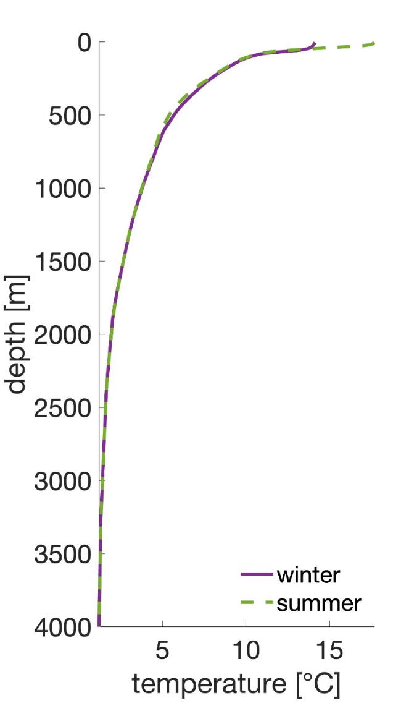
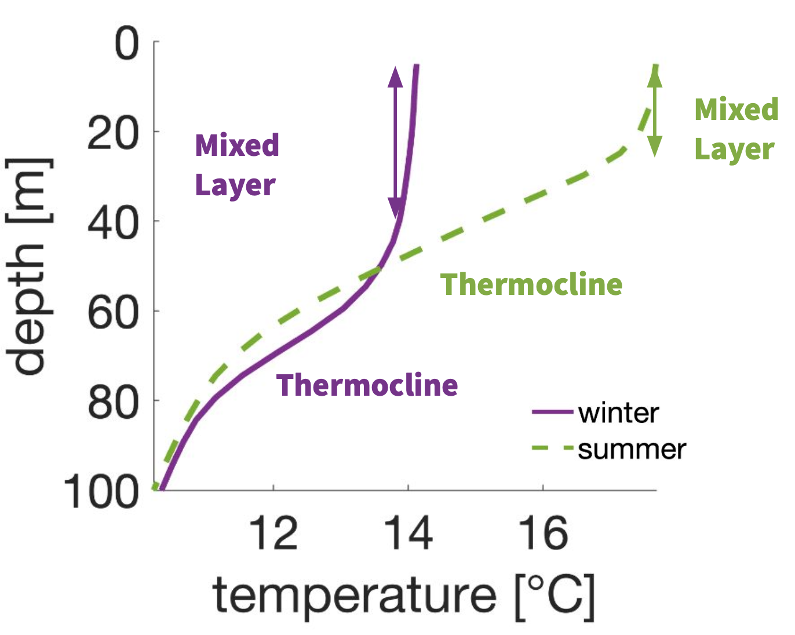
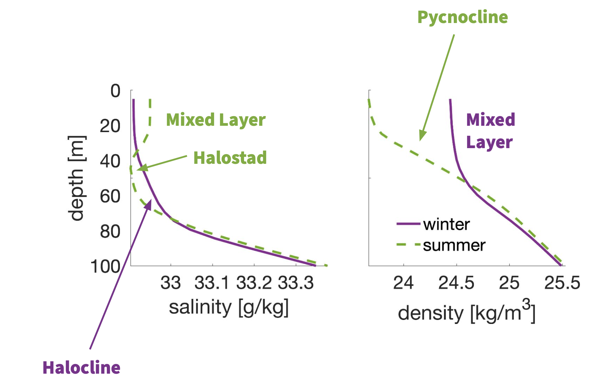
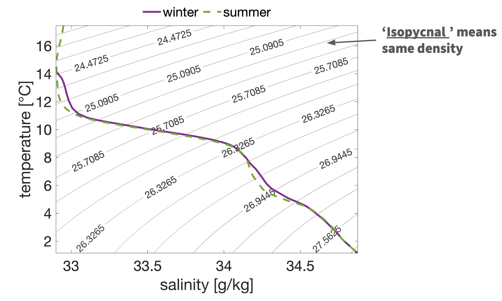
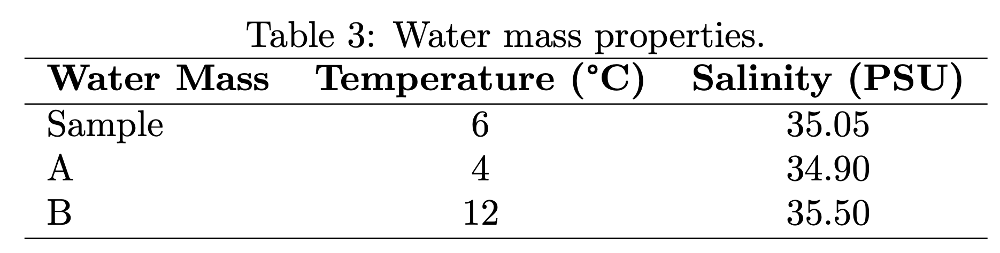

Intro to Physical Oceanography
Instructor: Caeli Griffin cagriffin@ucsd.edu (Keck 225)
TA: Tommy Stone
See algebra warm-up partial solutions here.
1 | Introduction
This lecture is designed to provide incoming students with a (brief!) introduction to fundamental topics in Physical Oceanography (PO), including: selected algebra topics, ocean stratification, the hydrostatic equation, T/S diagrams, and water masses.
Aside: If you notice any mistakes in these notes or have suggestions for improving their clarity, please let me know!
2 | What is Physical Oceanography?
Physical oceanography is the study of the ocean’s physical properties, and the dynamical processes that explain these properties. Physical oceanographers are interested in topics like:
General circulation of the ocean
Waves and tides
Ocean-atmosphere interactions
Understanding PO requires a mathematical toolbox, which includes:
Systems of equations/linear algebra
Trigonometry
Derivatives
Integrals
Differential equations
Aside: Don’t fret! We will review these concepts throughout the math workshop.
[4]:
from IPython.display import HTML
HTML("""
<video width="640" autoplay loop muted playsinline>
<source src="figs_po/perpetual_ocean_1080p30.mp4" type="video/mp4">
</video>
""")
[4]:
3 | The Ocean as a Stratified Fluid
The ocean is a stratified (i.e. layered) fluid. The depth of each ocean layer is determined by its density; denser seawater lives deeper in the ocean, and less dense seawater lives shallower in the ocean. The density of seawater is determined by its temperature, salinity, and pressure. In general, colder and saltier water is denser than warmer and fresher water.
Aside: The equation above means: ‘density is a function of temperature, salinity, and pressure.’
EX. Dimensional Analysis
Question: How many decibars of pressure are equivalent to 1 meter of seawater depth?
Hint: The following figure, units, and constants may be useful to you!

Table 1. Common units in physical oceanography.
Unit |
Base Units |
Unit of: |
|---|---|---|
N |
\(1~\text{kg}\cdot\text{m}\cdot\text{s}^{-2}\) |
Force |
Pa |
\(1~\text{kg}\cdot\text{m}^{-1}\cdot\text{s}^{-2}\) |
Pressure |
dbar |
\(10^{3}~\text{Pa}\) |
Pressure |
atm |
\(1.013 \times 10^{5}~\text{Pa}\) |
Pressure |
J |
\(1~\text{kg}\cdot\text{m}^{2}\cdot\text{s}^{-2} = 1~\text{N}\cdot\text{m}\) |
Energy |
W |
\(1~\text{J}\cdot\text{s}^{-1} = 1~\text{kg}\cdot\text{m}^{2}\cdot\text{s}^{-3}\) |
Power |
\(\rho\) |
\(1~\text{kg}\cdot\text{m}^{-3}\) |
Density |
Table 2. Useful constants in physical oceanography.
Constant |
Value |
Unit |
|---|---|---|
\(g\) |
9.81 |
\(\text{m}\cdot\text{s}^{-2}\) |
\(\rho_0\) |
1025 |
\(\text{kg}\cdot\text{m}^{-3}\) |
\(c_p\) |
3985 |
\(\text{J}\cdot\text{kg}^{-1}\cdot\text{K}^{-1}\) |
\(\Omega\) |
\(7.2921 \times 10^{-5}\) |
\(\text{rad}\cdot\text{s}^{-1}\) |
Problem Set-Up:
Let pressure and depth be ‘P’ and ‘h’, respectively. The provided figure suggests that pressure and depth are linearly related. This means we can write: \(P \propto h\) (‘P is linearly correlated with h’).
To turn the \(\propto\) symbol into an equal sign, we introduce a constant of proportionality (κ):
So, what’s κ?
Hint: Write the units for P and h. What units must κ have (see: Table 1)? Can you build the right κ from constants in Table 2?
3.1 | Anatomy of a Vertical Profile
The NASA Perpetual Ocean movie (see: Introduction) shows water particle motion through time at the surface (i.e. 2D visualization). But, seawater properties and ocean dynamics often vary with depth; the surface looks and behaves differently than the interior.
Vertical profiles describe how ocean properties like temperature, salinity, density, or velocity change with depth. Two example temperature profiles (where the data represent seasonal climatologies, meaning averages over a full season of data) are co-plotted below for a location off the coast of California.

Now, let’s zoom in on the figure above, in order to identify some key features.

Within the oceanic mixed layer (typically uppermost ~10-100 m of water column), water properties like temperature, salinity, and density are homogeneous. Directly below the mixed layer, temperature appears to decrease rapidly - this region is called the thermocline. We can identify similar features in vertical profiles of salinity and density.

Notice that the mixed layer is larger/deeper during the winter time, and thinner/shallower during the summer time. Winter storms mix up more of the surface ocean, causing the mixed layer to deepen.
3.2 | Temperature and Salinity Diagrams
We can combine profiles of temperature, salinity, and density into a single plot, called a T/S diagram. T/S diagrams are useful for identifying distinctive ‘flavors’ of water throughout the ocean, called water masses. There are ~10 major categories of named water masses in the ocean, and water parcels belonging to a water mass all share similar ‘life cycles’. Various water masses and their formation mechanisms will be covered in detail during SIO 210. The presence or absence of water masses across different locations offers clues about general circulation patterns in the ocean.

EX. Mixing Water Masses
Water masses are formed when surface water interacts with atmosphere and freshwater inputs. When that water parcel becomes dense enough, it can sink below the mixed layer. Water mass temperature and salinity are conserved properties in the ocean (i.e. not influenced by biological or chemical processes).
Two water masses meet and mix. You measure a sample of water with a temperature of 6°C and a salinity of 35.05 PSU. You know that the two water masses that mixed to form this sample have the following properties:
Water Mass A: T = 4°C, S = 34.90 PSU
Water Mass B: T = 12°C, S = 35.50 PSU
Question: What fraction of the sample came from water mass A?
_Hint: If a fraction \(\gamma_A\) came from water mass A, then $ T = \gamma_A \cdot `T_A + (1-:nbsphinx-math:gamma`A) :nbsphinx-math:`cdot `T_B$. You can write an analogous equation for :math:`S` (but don’t need to, for the purposes of this problem)!
Problem Set-Up:
Properties of the water sample, and water masses A and B, are organized into the table below:

Notice that we have the following two equations,
but only one unknown (\(\gamma_A\)) – the system is over-constrained! Proceed by choosing to solve either equation for \(\gamma_A\) (both should yield identical solutions, barring errors in our reported temperature or salinity values).
References
Izzy Rojas contributed heavily to these notes! Tommy Stone and Sarah Purkey also helped to refine lecture content.
Data used for temperature, salinity, and density profiles, and T/S diagram are available here: